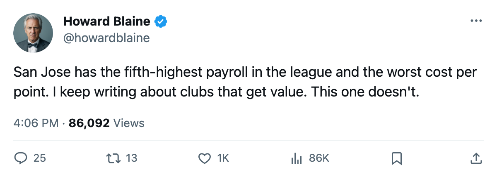

The Most Expensive Points in Hockey: San Jose Spends $66.24M and Gets $3.01M a Game
Five clubs carry payrolls above $66M. Four of them are in the playoff picture. One is 12th in the Western Conference.
 Howard BlaineSenior writer, The Blaine Rankings · The Hockey Gazette
Howard BlaineSenior writer, The Blaine Rankings · The Hockey Gazette
The  San Jose Sharks Sharks carry the fifth-highest payroll in the league at $66.24M. They sit 12th in the Western Conference with 22 points through 25 games, which works out to $3.01M per point, the worst ratio in the league. Phoenix is second-worst at $2.92M. The gap between San Jose and the next club down is $0.09M a point, and between San Jose and the best value in hockey, Nashville at $1.42M, is $1.59M.
San Jose Sharks Sharks carry the fifth-highest payroll in the league at $66.24M. They sit 12th in the Western Conference with 22 points through 25 games, which works out to $3.01M per point, the worst ratio in the league. Phoenix is second-worst at $2.92M. The gap between San Jose and the next club down is $0.09M a point, and between San Jose and the best value in hockey, Nashville at $1.42M, is $1.59M.
The halfway point is still 40 games away. But four days ago the Sharks lost their fourth in a row, their longest streak of the season, and their home record stands at 3 and 11. They have won more games on the road than at home, 6 to 3, and the road winning percentage of .545 exceeds the home winning percentage of .214 by 33.1 percentage points.
The five highest payrolls, ranked by what they buy
| Club | Payroll | Points | Cost per point | Conference rank |
|---|---|---|---|---|
 New York Rangers New York Rangers | $92.95M | 43 | $2.16M | 1st, East |
 Toronto Maple Leafs Toronto Maple Leafs | $89.94M | 40 | $2.25M | 2nd, East |
 St. Louis Blues St. Louis Blues | $69.76M | 37 | $1.89M | 2nd, West |
 Colorado Avalanche Colorado Avalanche | $66.38M | 29 | $2.29M | 7th, West |
| San Jose Sharks | $66.24M | 22 | $3.01M | 12th, West |
New York carries the league's largest payroll and sits first in the East. St. Louis sits second in the West. Colorado, the closest comp in dollars, spends $0.14M less per point than San Jose and has 7 more points and a 5-game better conference standing. The Sharks are in the top five in spending and in the bottom third in production.
No one is scoring, and the goaltending does not compensate
No San Jose player appears among the league's top 30 in scoring. The Sharks have scored 58 goals in 25 games, a rate of 2.32 per night that puts them 5th-worst in the league. They have allowed 71, a rate of 2.84 that is unremarkable, and the minus-13 differential is the sum of an offense that cannot score.
 Evgeni Nabokov87 carries a 2.69 goals-against average and a 0.865 save percentage in 21 decisions, with a 7 and 14 record. His 87 overall on the Bureau's Book is the 24th-highest among qualifying goaltenders. The 6 wins at 5 on the road against 3 and 11 at home suggest that whatever is happening in San Jose's building has very little to do with the goaltender.
Evgeni Nabokov87 carries a 2.69 goals-against average and a 0.865 save percentage in 21 decisions, with a 7 and 14 record. His 87 overall on the Bureau's Book is the 24th-highest among qualifying goaltenders. The 6 wins at 5 on the road against 3 and 11 at home suggest that whatever is happening in San Jose's building has very little to do with the goaltender.
The Sharks have one prospect in the Bureau's under-23 rankings: none. Not one player on the roster aged 23 or under appears in the top 40 by overall grade, which is a league-wide list and a poor one for a club that has been in the league since 1991. The absence of young depth means the current core cannot be supplemented cheaply.
The building is not helping
San Jose drew 13,393 per game through the first quarter of the season, the fourth-lowest figure in a 30-club league. Only Phoenix at 11,411, New York Islanders at 13,329, and Los Angeles at 13,332 draw fewer. The ticket price is $80, matching the league median. Revenue sits at $42.69M and profit at $14.90M, which means the business is solvent even as the hockey underperforms. The ownership group can afford to wait. Whether the 13,393 people at each home game can afford to is a different question, and a 3 and 11 home record does not ask it gently.

What remains
The Sharks have 13 Pacific division games left, the most of any club in that division, and they have lost their only meeting to Dallas. They have not yet played Phoenix, the only Pacific club with fewer points. The Western Conference's eighth seed is currently  Mighty Ducks of Anaheim at 29 points. San Jose is 7 points back with 1 more game played than Anaheim. That is a gap that would require winning more than 60 percent of the remaining schedule to close.
Mighty Ducks of Anaheim at 29 points. San Jose is 7 points back with 1 more game played than Anaheim. That is a gap that would require winning more than 60 percent of the remaining schedule to close.
The Bureau's Book has no San Jose player above 90. The Development Index has the Sharks trending downward across the board, and the 4-game losing streak has done nothing to correct that. A club cannot spend its way out of a minus-13 goal differential, and it cannot wait out a 3 and 11 home record. The calendar says the trade deadline is 101 days away. At some point before then, someone in San Jose has to decide what $66.24M is buying and whether any of it can be moved.
